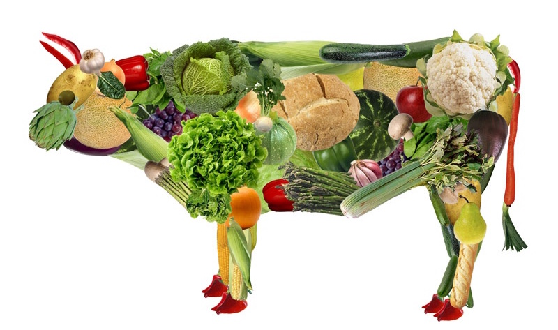
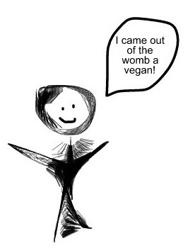
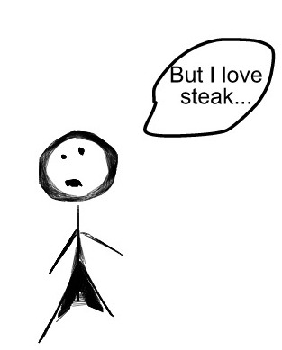
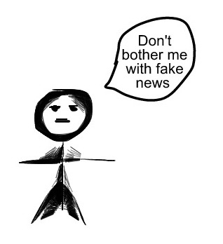

__________
Greenhouse gases are accredited with the depletion of our ozone layer and rising global temperatures_________
The adverse effects of such events would include water shortages, famine, and dangerous changes to the global landscape (e.g. - grasslands converted to deserts)__________
Livestock farming is responsible for 20- to 50-% of all man-made greenhouse gases__________
Carbon Dioxide (CO2) accounts for about three-fourths of total greenhouse emissions__________
Meat-eaters have almost double the carbon footprint of vegetarians__________
But when you tell someone that the widespread adoption of a vegetarian diet could bring down CO2 emissions by 63% their reaction is rarely this:
In fact, in the United States it's way more likely to be this...:
and it would even come as no surprise if it was this..:
__________
Our choices matter. History is being written today.
sources: http://www.un.org/climatechange/blog/2014/03/ipcc-report-severe-and-pervasive-impacts-of-climate-change-will-be-felt-everywhere/ http://www.peta.org/issues/animals-used-for-food/global-warming/ http://www.chooseveg.com/environment http://www.climatecentral.org/news/greenhouse-gas-emissions-rate-puts-billion-more-at-risk-16598 http://america.aljazeera.com/articles/2013/12/15/study-reveals-newchemcial7000timesmoredangerousthanco2.html https://www.epa.gov/climate-indicators/greenhouse-gases http://shrinkthatfootprint.com/food-carbon-footprint-diet